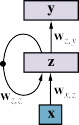
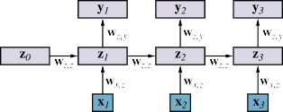

Word Embeddings
We would like a representation of words that does not require manual feature engineering, but
allows for generalization between related words—words that are related syntactically (“col-
orless” and “ideal” are both adjectives), semantically (“cat” and “kitten” are both felines),
topically (“sunny” and “sleet” are both weather terms), in terms of sentiment (“awesome”
has opposite sentiment to “cringeworthy”), or otherwise.How should we encode a word into an input vector x for use in a neural network? As
explained in Section 22.2.1 (page 807), we could use a one-hot vector—that is, we encode
the ith word in the dictionary with a 1 bit in the ith input position and a 0 in all the other
positions. But such a representation would not capture the similarity between words.Following the linguist John R. Firth’s (1957) maxim, “You shall know a word by the com-
pany it keeps,” we could represent each word with a vector of n-gram counts of all the phrases
that the word appears in. However, raw n-gram counts are cumbersome. With a 100,000-word
vocabulary, there are 1025 5-grams to keep track of (although vectors in this 1025-dimensional
space would be quite sparse—most of the counts would be zero). We would get better gen-908 Chapter 25 Deep Learning for Natural Language Processing
Word embedding
eralization if we reduced this to a smaller-size vector, perhaps with just a few hundred di-
mensions. We call this smaller, dense vector a word embedding: a low-dimensional vector
representing a word. Word embeddings are learned automatically from the data. (We will see
later how this is done.) What are these learned word embeddings like? On the one hand, each
one is just a vector of numbers, where the individual dimensions and their numeric values do
not have discernible meanings:“aardvark” = [−0.7, +0.2, −3.2,...]
“abacus” = [+0.5, +0.9, −1.3,...]
·“·z·yzzyva” = [−0.1, +0.8, −0.4,...].
On the other hand, the feature space has the property that similar words end up having similar
vectors. We can see that in Figure 25.1, where there are separate clusters for country, kinship,
transportation, and food words.—
It turns out, for reasons we do not completely understand, that the word embedding vec-
tors have additional properties beyond mere proximity for similar words. For example, sup-
pose we look at the vectors A for Athens and B for Greece. For these words the vector
difference B A seems to encode the country/capital relationship. Other pairs—France and
Paris, Russia and Moscow, Zambia and Lusaka—have essentially the same vector difference.− − −
We can use this property to solve word analogy problems such as “Athens is to Greece
as Oslo is to [what]?” Writing C for the Oslo vector and D for the unknown, we hypothesize
that B A = D C, giving us D = C + (B A). And when we compute this new vector D,
we find that it is closer to “Norway” than to any other word. Figure 25.2 shows that this type
of vector arithmetic works for many relationships.However, there is no guarantee that a particular word embedding algorithm run on a par-
ticular corpus will capture a particular semantic relationship. Word embeddings are popular
because they have proven to be a good representation for downstream language tasks (such
as question answering or translation or summarization), not because they are guaranteed to
answer analogy questions on their own.Using word embedding vectors rather than one-hot encodings of words turns out to be
helpful for essentially all applications of deep learning to NLP tasks. Indeed, in many cases
it is possible to use generic pretrained vectors, obtained from any of several suppliers, for
one’s particular NLP task. At the time of writing, the commonly used vector dictionaries
include WORD2VEC, GloVe (Global Vectors), and FASTTEXT, which has embeddings for
157 languages. Using a pretrained model can save a great deal of time and effort. For more
on these resources, see Section 25.5.1.It is also possible to train your own word vectors; this is usually done at the same time as
training a network for a particular task. Unlike generic pretrained embeddings, word embed-
dings produced for a specific task can be trained on a carefully selected corpus and will tend
to emphasize aspects of words that are useful for the task. Suppose, for example, that the
task is part-of-speech (POS) tagging (see Section 24.1.6). Recall that this involves predicting
the correct part of speech for each word in a sentence. Although this is a simple task, it is
nontrivial because many words can be tagged in multiple ways—for example, the word cutcan be a present-tense verb (transitive or intransitive), a past-tense verb, an infinitive verb, a
past participle, an adjective, or a noun. If a nearby temporal adverb refers to the past, thatSection 25.1 Word Embeddings 909
france greece
germany
nephew
niece
uncle aunt
car
banana
bicycle
pizza
truck
apple
Figure 25.1 Word embedding vectors computed by the GloVe algorithm trained on 6 billion
words of text. 100-dimensional word vectors are projected down onto two dimensions in this
visualization. Similar words appear near each other.A B
Athens Greece
Astana Kazakhstan
Angola kwanza
copper CuMicrosoft Windows
New York New York Times
Berlusconi SilvioSwitzerland Swiss
Einstein scientist
brother sister
Chicago Illinois
possibly impossibly
mouse miceeasy easiest
walking walked
C
Oslo
Harare
Iran
gold
GoogleBaltimore
Obama
Cambodia
Picasso
grandson
Stockton
ethical
dollar
lucky
swimmingD = C + (B − A)
Norway
Zimbabwe
rialAu
AndroidBaltimore Sun
Barack
Cambodian
painter
granddaughter
California
unethical
dollars
luckiestswam
Relationship
CapitalAtomic Symbol
Operating System
NewspaperFirst name
Nationality
Occupation
Family Relation
StateNegative
Plural
Superlative
Past tense—
Figure 25.2 A word embedding model can sometimes answer the question “A is to B as C
is to [what]?” with vector arithmetic: given the word embedding vectors for the words A, B,
and C, compute the vector D = C + (B A) and look up the word that is closest to D. (The
answers in column D were computed automatically by the model. The descriptions in the
“Relationship” column were added by hand.) Adapted from Mikolov et al. (2013, 2014).910 Chapter 25 Deep Learning for Natural Language Processing
Class = PastTenseVerb
Embedding
lookupHidden Layer 1
Embedding
lookupEmbedding
lookupEmbedding
lookupEmbedding
lookupHidden Layer 2
Output Layer
Yesterday they cut the rope
Figure 25.3 Feedforward part-of-speech tagging model. This model takes a 5-word window
as input and predicts the tag of the word in the middle—here, cut. The model is able to
account for word position because each of the 5 input embeddings is multiplied by a different
part of the first hidden layer. The parameter values for the word embeddings and for the three
layers are all learned simultaneously during training.suggests that this particular occurrence of cut is a past-tense verb; and we might hope, then,
that the embedding will capture the past-referring aspect of adverbs.POS tagging serves as a good introduction to the application of deep learning to NLP,
without the complications of more complex tasks like question answering (see Section 25.5.3).
Given a corpus of sentences with POS tags, we learn the parameters for the word embeddings
and the POS tagger simultaneously. The process works as follows:Choose the width w (an odd number of words) for the prediction window to be used
to tag each word. A typical value is w = 5, meaning that the tag is predicted based on
the word plus the two words to the left and the two words to the right. Split every
sentence in your corpus into overlapping windows of length w. Each window produces
one training example consisting of the w words as input and the POS category of the
middle word as output.Create a vocabulary of all of the unique word tokens that occur more than, say, 5 times
in the training data. Denote the total number of words in the vocabulary as v.Sort this vocabulary in any arbitrary order (perhaps alphabetically).
Choose a value d as the size of each word embedding vector.
Create a new v-by-d weight matrix called E. This is the word embedding matrix. Row
i of E is the word embedding of the ith word in the vocabulary. Initialize E randomly
(or from pretrained vectors).Set up a neural network that outputs a part of speech label, as shown in Figure 25.3. The
first layer will consist of w copies of the embedding matrix. We might use two additional
hidden layers, z1 and z2 (with weight matrices W1 and W2, respectively), followed bySection 25.2 Recurrent Neural Networks for NLP 911
a softmax layer yielding an output probability distribution yˆ over the possible part-of-
speech categories for the middle word:z1 = σ(W1x)
z2 = σ(W2z1)
yˆ = softmax(Woutz2) .
To encode a sequence of w words into an input vector, simply look up the embedding
for each word and concatenate the embedding vectors. The result is a real-valued in-
put vector x of length wd. Even though a given word will have the same embedding
vector whether it occurs in the first position, the last, or somewhere in between, each
embedding will be multiplied by a different part of the first hidden layer; therefore we
are implicitly encoding the relative position of each word.Train the weights E and the other weight matrices W1, W2, and Wout using gradient
descent. If all goes well, the middle word, cut, will be labeled as a past-tense verb, based
on the evidence in the window, which includes the temporal past word “yesterday,” the
third-person subject pronoun “they” immediately before cut, and so on.
An alternative to word embeddings is a character-level model in which the input is a se-
quence of characters, each encoded as a one-hot vector. Such a model has to learn how
characters come together to form words. The majority of work in NLP sticks with word-level
rather than character-level encodings.Recurrent Neural Networks for NLP
We now have a good representation for single words in isolation, but language consists of
an ordered sequence of words in which the context of surrounding words is important. For
simple tasks like part of speech tagging, a small, fixed-size window of perhaps five words
usually provides enough context.More complex tasks such as question answering or reference resolution may require
dozens of words as context. For example, in the sentence “Eduardo told me that Miguelhim to the hospital,” knowing that him refers to Miguel and not
Eduardo requires context that spans from the first to the last word of the 14-word sentence.Language models with recurrent neural networks
We’ll start with the problem of creating a language model with sufficient context. Recall that
a language model is a probability distribution over sequences of words. It allows us to predict
the next word in a text given all the previous words, and is often used as a building block for
more complex tasks.Building a language model with either an n-gram model (as in Section 24.1) or a feedfor-
ward network with a fixed window of n words can run into difficulty due to the problem of
context: either the required context will exceed the fixed window size or the model will have
too many parameters, or both.In addition, a feedforward network has the problem of asymmetry: whatever it learns
about, say, the appearance of the word him as the 12th word of the sentence it will have to
relearn for the appearance of him at other positions in the sentence, because the weights are
different for each word position.912 Chapter 25 Deep Learning for Natural Language Processing


Δ
Figure 25.4 (a) Schematic diagram of an RNN where the hidden layer z has recurrent con-
nections; the ∆ symbol indicates a delay. Each input x is the word embedding vector of the
next word in the sentence. Each output y is the output for that time step. (b) The same net-work unrolled over three timesteps to create a feedforward network. Note that the weights
are shared across all timesteps.In Section 22.6, we introduced the recurrent neural network or RNN, which is designed
to process time-series data, one datum at a time. This suggests that RNNs might be useful for
processing language, one word at a time. We repeat Figure 22.8 here as Figure 25.4.In an RNN language model each input word is encoded as a word embedding vector, xi.
There is a hidden layer zt which gets passed as input from one time step to the next. We are
interested in doing multiclass classification: the classes are the words of the vocabulary. Thus
the output yt will be a softmax probability distribution over the possible values of the next
word in the sentence.The RNN architecture solves the problem of too many parameters. The number of param-
eters in the weight matrixes w,z,z, w,x,z, and w,z,y stays constant, regardless of the number of
words—it is O(1). This is in contrast to feedforward networks, which have O(n) parameters,
and n-gram models, which have O(vn) parameters, where v is the size of the vocabulary.The RNN architecture also solves the problem of asymmetry, because the weights are the
same for every word position.The RNN architecture can sometimes solve the limited context problem as well. In theory
there is no limit to how far back in the input the model can look. Each update of the hidden
layer zt has access to both the current input word xt and the previous hidden layer zt−1,
which means that information about any word in the input can be kept in the hidden layer
indefinitely, copied over (or modified as appropriate) from one time step to the next. Of
course, there is a limited amount of storage in z, so it can’t remember everything about all the
previous words.In practice RNN models perform well on a variety of tasks, but not on all tasks. It can be
hard to predict whether they will be succesful for a given problem. One factor that contributes
to success is that the training process encourages the network to allocate storage space in z to
the aspects of the input that will actually prove to be useful.To train an RNN language model, we use the training process described in Section 22.6.1.
The inputs, xt, are the words in a training corpus of text, and the observed outputs are the sameSection 25.2 Recurrent Neural Networks for NLP 913
Class =
AdverbClass =
PronounClass =
PastTenseVerbClass =
DeterminerClass =
NounFeedforward Feedforward Feedforward Feedforward
RNN
RNN
RNN
RNN
RNN
RNN RNN RNN RNN
Embedding
lookupEmbedding
lookupEmbedding
lookupEmbedding
lookupEmbedding
lookupRNN
Feedforward
Yesterday they cut the rope
Figure 25.5 A bidirectional RNN network for POS tagging.
words offset by 1. That is, for the training text “hello world,” the first input x1 is the word
embedding for “hello” and the first output y1 is the word embedding for “world.” We are
training the model to predict the next word, and expecting that in order to do so it will use the
hidden layer to represent useful information. As explained in Section 22.6.1 we compute the
difference between the observed output and the actual output computed by the network, and
back-propagate through time, taking care to keep the weights the same for all time steps.Once the model has been trained, we can use it to generate random text. We give the
model an initial input word x1, from which it will produce an output y1 which is a softmax
probability distribution over words. We sample a single word from the distribution, record the
word as the output for time t, and feed it back in as the next input word x2. We repeat for as
long as desired. In sampling from y1 we have a choice: we could always take the most likely
word; we could sample according to the probability of each word; or we could oversample
the less-likely words, in order to inject more variety into the generated output. The sampling
weight is a hyperparameter of the model.Here is an example of random text generated by an RNN model trained on Shakespeare’s
works (Karpathy, 2015):Marry, and will, my lord, to weep in such a one were prettiest;
Yet now I was adopted heirOf the world’s lamentable day,
To watch the next way with his father with his face?
Classification with recurrent neural networks
It is also possible to use RNNs for other language tasks, such as part of speech tagging or
coreference resolution. In both cases the input and hidden layers will be the same, but for
a POS tagger the output will be a softmax distribution over POS tags, and for coreference
resolution it will be a softmax distribution over the possible antecedents. For example, when
the network gets to the input him in “Eduardo told me that Miguel was very sick so I tookhim to the hospital” it should output a high probability for “Miguel.”914 Chapter 25 Deep Learning for Natural Language Processing
Bidirectional RNN
Average pooling
Training an RNN to do classification like this is done the same way as with the language
model. The only difference is that the training data will require labels—part of speech tags
or reference indications. That makes it much harder to collect the data than for the case of a
language model, where unlabelled text is all we need.In a language model we want to predict the nth word given the previous words. But for
classification, there is no reason we should limit ourselves to looking at only the previous
words. It can be very helpful to look ahead in the sentence. In our coreference example, the
referent him would be different if the sentence concluded “to see Miguel” rather than “to the
hospital,” so looking ahead is crucial. We know from eye-tracking experiments that human
readers do not go strictly left-to-right.To capture the context on the right, we can use a bidirectional RNN, which concatenates
a separate right-to-left model onto the left-to-right model. An example of using a bidirectional
RNN for POS tagging is shown in Figure 25.5.In the case of a multilayer RNN, zt will be the hidden vector of the last layer. For a
bidirectional RNN, zt is usually taken to be the concatenation of vectors from the left-to-right
and right-to-left models.RNNs can also be used for sentence-level (or document-level) classification tasks, in
which a single output comes at the end, rather than having a stream of outputs, one per
time step. For example in sentiment analysis the goal is to classify a text as having either
Positive or Negative sentiment. For example, “This movie was poorly written and poorlyshould be classified as Negative. (Some sentiment analysis schemes use more than
two categories, or use a numeric scalar value.)Using RNNs for a sentence-level task is a bit more complex, since we need to obtain
an aggregate whole-sentence representation, y from the per-word outputs yt of the RNN.
The simplest way to do this is to use the RNN hidden state corresponding to the last word
of the input, since the RNN will have read the entire sentence at that timestep. However,
this can implicitly bias the model towards paying more attention to the end of the sentence.
Another common technique is to pool all of the hidden vectors. For instance, average poolingcomputes the element-wise average over all of the hidden vectors:s
z˜ = 1 z
s
∑ t .
t = 1
The pooled d-dimensional vector z˜ can then be fed into one or more feedforward layers before
being fed into the output layer.LSTMs for NLP tasks
We said that RNNs sometimes solve the limited context problem. In theory, any information
could be passed along from one hidden layer to the next for any number of time steps. But
in practice the information can get lost or distorted, just as in playing the game of telephone,
in which players stand in line and the first player whispers a message to the second, who
repeats it to the third, and so on down the line. Usually, the message that comes out at the
end is quite corrupted from the original message. This problem for RNNs is similar to the
vanishing gradient problem we described on page 807, except that we are dealing now with
layers over time rather than with deep layers.In Section 22.6.2 we introduced the long short-term memory (LSTM) model. This is a
kind of RNN with gating units that don’t suffer from the problem of imperfectly reproducingSection 25.3 Sequence-to-Sequence Models 915
El
hombre
es
alto
<end>
Source
Source
Source
Source
Target
Target
Target
Target
Target
LSTM
LSTM
LSTM
LSTM
LSTM
LSTM
LSTM
LSTM
LSTM
The
man
is
tall
<start>
El
hombre
es
alto
Figure 25.6 Basic sequence-to-sequence model. Each block represents one LSTM timestep.
(For simplicity, the embedding and output layers are not shown.) On successive steps we feed
the network the words of the source sentence “The man is tall,” followed by the <start> tag
to indicate that the network should start producing the target sentence. The final hidden state
at the end of the source sentence is used as the hidden state for the start of the target sentence.
After that, each target sentence word at time t is used as input at time t + 1, until the network
produces the <end> tag to indicate that sentence generation is finished.a message from one time step to the next. Rather, an LSTM can choose to remember some
parts of the input, copying it over to the next timestep, and to forget other parts. Consider a
language model handling a text such asThe athletes, who all won their local qualifiers and advanced to the finals in Tokyo, now ...
At this point if we asked the model which next word was more probable, “compete” or “com-
petes,” we would expect it to pick “compete” because it agrees with the subject “The athletes.”
An LSTM can learn to create a latent feature for the subject person and number and copy that
feature forward without alteration until it is needed to make a choice like this. A regular
RNN (or an n-gram model for that matter) often gets confused in long sentences with many
intervening words between the subject and verb.
Sequence-to-Sequence Models
(MT)
One of the most widely studied tasks in NLP is machine translation (MT), where the goal Machine translation
is to translate a sentence from a source language to a target language—for example, from Source language
Spanish to English. We train an MT model with a large corpus of source/target sentence pairs.
The goal is to then accurately translate new sentences that are not in our training data.Can we use RNNs to create an MT system? We can certainly encode the source sentence
with an RNN. If there were a one-to-one correspondence between source words and target
words, then we could treat MT as a simple tagging task—given the source word “perro” in
Spanish, we tag it as the corresponding English word “dog.” But in fact, words are not one-
to-one: in Spanish the three words “caballo de mar” corresponds to the single English word
“seahorse,” and the two words “perro grande” translate to “big dog,” with the word order
reversed. Word reordering can be even more extreme; in English the subject is usually at the
start of a sentence, but in Fijian the subject is usually at the end. So how do we generate a
sentence in the target language?It seems like we should generate one word at a time, but keep track of the context so that
we can remember parts of the source that haven’t been translated yet, and keep track of what
has been translated so that we don’t repeat ourselves. It also seems that for some sentencesTarget language
916 Chapter 25 Deep Learning for Natural Language Processing
Sequence-to-
sequencewe have to process the entire source sentence before starting to generate the target. In other
words, the generation of each target word is conditional on the entire source sentence and on
all previously generated target words.This gives text generation for MT a close connection to a standard RNN language model,
as described in Section 25.2. Certainly, if we had trained an RNN on English text, it would
be more likely to generate “big dog” than “dog big.” However, we don’t want to generate
just any random target language sentence; we want to generate a target language sentence
that corresponds to the source language sentence. The simplest way to do that is to use two
RNNs, one for the source and one for the target. We run the source RNN over the source
sentence and then use the final hidden state from the source RNN as the initial hidden state
for the target RNN. This way, each target word is implicitly conditioned on both the entire
source sentence and the previous target words.This neural network architecture is called a basic sequence-to-sequence model, an ex-
model ample of which is shown in Figure 25.6. Sequence-to-sequence models are most commonly
used for machine translation, but can also be used for a number of other tasks, like automati-
cally generating a text caption from an image, or summarization: rewriting a long text into a
shorter one that maintains the same meaning.Basic sequence-to-sequence models were a significant breakthrough in NLP and MT
specifically. According to Wu et al. (2016b) the approach led to a 60% error reduction over
the previous MT methods. But these models suffer from three major shortcomings:•
Nearby context bias: whatever RNNs want to remember about the past, they have to fit
into their hidden state. For example, let’s say an RNN is processing word (or timestep)
57 in a 70-word sequence. The hidden state will likely contain more information about
the word at timestep 56 than the word at timestep 5, because each time the hidden vector
is updated it has to replace some amount of existing information with new information.
This behavior is part of the intentional design of the model, and often makes sense for
NLP, since nearby context is typically more important. However, far-away context can
be crucial as well, and can get lost in an RNN model; even LSTMs have difficulty with
this task.•
Fixed context size limit: In an RNN translation model the entire source sentence is
compressed into a single fixed-dimensional hidden state vector. An LSTM used in
a state-of-the-art NLP model typically has around 1024 dimensions, and if we have to
represent, say, a 64-word sentence in 1024 dimensions, this only gives us 16 dimensions
per word—not enough for complex sentences. Increasing the hidden state vector size
can lead to slow training and overfitting.•
Slower sequential processing: As discussed in Section 22.3, neural networks realize
considerable efficiency gains by processing the training data in batches so as to take
advantage of efficient hardware support for matrix arithmetic. RNNs, on the other hand,
seem to be constrained to operate on the training data one word at a time.Attention
What if the target RNN were conditioned on all of the hidden vectors from the source RNN,
rather than just the last one? This would mitigate the shortcomings of nearby context bias and
fixed context size limits, allowing the model to access any previous word equally well. One
way to achieve this access is to concatenate all of the source RNN hidden vectors. However,Section 25.3 Sequence-to-Sequence Models 917
Target
Attentional
LSTM…
<start>
La
Source Source Source
LSTM LSTM LSTMLSTM
Source
Target
Attentional
LSTMSource
LSTMLa puerta
The front door is red
(a)The
front
door
is
redLa puerta de entrada es roja
(b)
Figure 25.7 (a) Attentional sequence-to-sequence model for English-to-Spanish translation.
The dashed lines represent attention. (b) Example of attention probability matrix for a bilin-
gual sentence pair, with darker boxes representing higher values of ai j. The attention proba-
bilities sum to one over each column.this would cause a huge increase in the number of weights, with a concomitant increase in
computation time and potentially overfitting as well. Instead, we can take advantage of the
fact that when the target RNN is generating the target one word at a time, it is likely that only
a small part of the source is actually relevant to each target word.Crucially, the target RNN must pay attention to different parts of the source for every
word. Suppose a network is trained to translate English to Spanish. It is given the words
“The front door is red” followed by an end of sentence marker, which means it is time to start
outputting Spanish words. So ideally it should first pay attention to “The” and generate “La,”
then pay attention to “door” and output “puerta,” and so on.We can formalize this concept with a neural network component called attention, which Attention
can be used to create a “context-based summarization” of the source sentence into a fixed-
dimensional representation. The context vector ci contains the most relevant informationfor generating the next target word, and will be used as an additional input to the target
RNN. A sequence-to-sequence model that uses attention is called an attentional sequence-. If the standard target RNN is written as:
hi = RNN(hi−1, xi) ,
the target RNN for attentional sequence-to-sequence models can be written as:
hi = RNN(hi−1, [xi; ci])
where [xi; ci] is the concatenation of the input and context vectors, ci, defined as:
ri j = hi−1 · s j
ai j = eri j /(∑erik )
k
·
ci = ∑ai j s j
jAttentional
sequence-to-
sequence
model918 Chapter 25 Deep Learning for Natural Language Processing
where hi−1 is the target RNN vector that is going to be used for predicting the word at timestep
i, and s j is the output of the source RNN vector for the source word (or timestep) j. Both hi−1
and s j are d-dimensional vectors, where d is the hidden size. The value of ri j is therefore the
raw “attention score” between the current target state and the source word j. These scores are
then normalized into a probability ai j using a softmax over all source words. Finally, these
probabilities are used to generate a weighted average of the source RNN vectors, ci (another
d-dimensional vector).An example of an attentional sequence-to-sequence model is given in Figure 25.7 (a).
There are a few important details to understand. First, the attention component itself has no
learned weights and supports variable-length sequences on both the source and target side.
Second, like most of the other neural network modeling techniques we’ve learned about,
attention is entirely latent. The programmer does not dictate what information gets used
when; the model learns what to use. Attention can also be combined with multilayer RNNs.
Typically attention is applied at each layer in that case.The probabilistic softmax formulation for attention serves three purposes. First, it makes
attention differentiable, which is necessary for it to be used with back-propagation. Even
though attention itself has no learned weights, the gradients still flow back through attention
to the source and target RNNs. Second, the probabilistic formulation allows the model to
capture certain types of long-distance contextualization that may have not been captured by
the source RNN, since attention can consider the entire source sequence at once, and learn to
keep what is important and ignore the rest. Third, probabilistic attention allows the network
to represent uncertainty—if the network does not know exactly what source word to translate
next, it can distribute the attention probabilities over several options, and then actually choose
the word using the target RNN.Unlike most components of neural networks, attention probabilities are often interpretable
by humans and intuitively meaningful. For example, in the case of machine translation, the
attention probabilities often correspond to the word-to-word alignments that a human would
generate. This is shown in Figure 25.7(b).Sequence-to-sequence models are a natural for machine translation, but almost any nat-
ural language task can be encoded as a sequence-to-sequence problem. For example, a
question-answering system can be trained on input consisting of a question followed by a
delimiter followed by the answer.Decoding
At training time, a sequence-to-sequence model attempts to maximize the probability of each
word in the target training sentence, conditioned on the source and all of the previous target
words. Once training is complete, we are given a source sentence, and our goal is to generate
the corresponding target sentence. As shown in Figure 25.7, we can generate the target one
word at a time, and then feed back in the word that we generated at the next timestep. ThisDecoding
Greedy decodingprocedure is called decoding.
The simplest form of decoding is to select the highest probability word at each timestep
and then feed this word as input to the next timestep. This is called greedy decoding because
after each target word is generated, the system has fully committed to the hypothesis that it
has produced so far. The problem is that the goal of decoding is to maximize the probability
of the entire target sequence, which greedy decoding may not achieve. For example, considerSection 25.4 The Transformer Architecture 919
Timestep 1
Timestep 2
Timestep 3
Timestep 4
Beam 1
Score: 0.0
[start]
Hypothesis
Beam 1
Score: 20.3
La
Hypothesis
Word
Score
La
20.3
Una
22.1
Word
Score
entrada
20.8
puerta
20.9
Beam 2
Beam 1
Score: 21.1
La entrada
Hypothesis
Word
Score
de
21.5
puerta
21.9
Beam 2
Beam 1
Hypothesis
La puerta de
Score: 21.7
Beam 2
Score: 22.1
Una
Hypothesis
Score: 21.2
La puerta
Hypothesis
Word
Score
entrada
20.3
puerta
22.1
Word
Score
de
20.5
del
20.7
Hypothesis
La puerta del
Score: 21.9
Figure 25.8 Beam search with beam size of b = 2. The score of each word is the log-
probability generated by the target RNN softmax, and the score of each hypothesis is the
sum of the word scores. At timestep 3, the highest scoring hypothesis La entrada can only
generate low-probability continuations, so it “falls off the beam.”using a greedy decoder to translate into Spanish the English sentence we saw before, The
The correct translation is “La puerta de entrada es roja”—literally “The door of entry isSuppose the target RNN correctly generates the first word La for The. Next, a greedy
decoder might propose entrada for front. But this is an error—Spanish word order should put
the noun puerta before the modifier. Greedy decoding is fast—it only considers one choice at
each timestep and can do so quickly—but the model has no mechanism to correct mistakes.We could try to improve the attention mechanism so that it always attends to the right
word and guesses correctly every time. But for many sentences it is infeasible to guess
correctly all the words at the start of the sentence until you have seen what’s at the end.A better approach is to search for an optimal decoding (or at least a good one) using
one of the search algorithms from Chapter 3. A common choice is a beam search (see Sec-
tion 4.1.3). In the context of MT decoding, beam search typically keeps the top k hypotheses
at each stage, extending each by one word using the top k choices of words, then chooses
the best k of the resulting k2 new hypotheses. When all hypotheses in the beam generate the
special <end> token, the algorithm outputs the highest scoring hypothesis.A visualization of beam search is given in Figure 25.8. As deep learning models become
more accurate, we can usually afford to use a smaller beam size. Current state-of-the-art
neural MT models use a beam size of 4 to 8, whereas the older generation of statistical MT
models would use a beam size of 100 or more.
The Transformer Architecture
The influential article “Attention is all you need” (Vaswani et al., 2018) introduced the trans-
former architecture, which uses a self-attention mechanism that can model long-distance Transformer
context without a sequential dependency.
Self-attention
Previously, in sequence-to-sequence models, attention was applied from the target RNN to
Self-attention
the source RNN. Self-attention extends this mechanism so that each sequence of hidden Self-attention
states also attends to itself—the source to the source, and the target to the target. This allows
the model to additionally capture long-distance (and nearby) context within each sequence.920 Chapter 25 Deep Learning for Natural Language Processing
Query vector
Key vector
Value vector
The most straightforward way of applying self-attention is where the attention matrix is
directly formed by the dot product of the input vectors. However, this is problematic. The dot
product between a vector and itself will always be high, so each hidden state will be biased
towards attending to itself. The transformer solves this by first projecting the input into three
different representations using three different weight matrices:The query vector qi = Wqxi is the one being attended from, like the target in the stan-
dard attention mechanism.The key vector ki = Wkxi is the one being attended to, like the source in the basic
attention mechanism.The value vector vi = Wvxi is the context that is being generated.
In the standard attention mechanism, the key and value networks are identical, but intuitively
it makes sense for these to be separate representations. The encoding results of the ith word,
ci, can be calculated by applying an attention mechanism to the projected vectors:ri j = (qi · k j)/√d
ai j = eri j /(∑erik )
k
·
ci = ∑ai j v j ,
j
where d is the dimension of k and q. Note that i and j are indexes in the same sentence, since
we are encoding the context using self-attention. In each transformer layer, self-attention uses
the hidden vectors from the previous layer, which initially is the embedding layer.There are several details worth mentioning here. First of all, the self-√attention mecha-
nism is asymmetric, as ri j is different from r ji. Second, the scale factor d was added to
Multiheaded
attentionimprove numerical stability. Third, the encoding for all words in a sentence can be calculated
simultaneously, as the above equations can be expressed using matrix operations that can be
computed efficiently in parallel on modern specialized hardware.The choice of which context to use is completely learned from training examples, not
prespecified. The context-based summarization, ci, is a sum over all previous positions in the
sentence. In theory, any information from the sentence could appear in ci, but in practice,
sometimes important information gets lost, because it is essentially averaged out over the
whole sentence. One way to address that is called multiheaded attention. We divide the
sentence up into m equal pieces and apply the attention model to each of the m pieces. Each
piece has its own set of weights. Then the results are concatenated together to form ci. By
concatenating rather than summing, we make it easier for an important subpiece to stand out.From self-attention to transformer
Self-attention is only one component of the transformer model. Each transformer layer con-
sists of several sub-layers. At each transformer layer, self-attention is applied first. The out-
put of the attention module is fed through feedforward layers, where the same feedforward
weight matrices are applied independently at each position. A nonlinear activation function,
typically ReLU, is applied after the first feedforward layer. In order to address the potential
vanishing gradient problem, two residual connections are added into the transformer layer.
A single-layer transformer in shown in Figure 25.9. In practice, transformer models usuallySection 25.4 The Transformer Architecture 921
Output Vectors
Transformer
Layer+
Residual
Connection+
Residual
ConnectionInput Vectors
Self-Attention
Feedforward
Feedforward
Feedforward
Feedforward
Figure 25.9 A single-layer transformer consists of self-attention, a feedforward network,
and residual connections.Feedforward
Feedforward
Class =
AdverbClass =
PronounClass =
PastTenseVerbClass =
DeterminerClass =
NounTransformer Layer
Transformer Layer
Transformer Layer
Positional
Embedding 1
Positional
Embedding 2
Positional
Embedding 3
Positional
Embedding 4
Positional
Embedding 5
+ + + + +
Embedding
lookupEmbedding
lookupEmbedding
lookupEmbedding
lookupEmbedding
lookupYesterday they cut the rope
Figure 25.10 Using the transformer architecture for POS tagging.
have six or more layers. As with the other models that we’ve learned about, the output of
layer i is used as the input to layer i + 1.The transformer architecture does not explicitly capture the order of words in the se-
quence, since context is modeled only through self-attention, which is agnostic to word order.
To capture the ordering of the words, the transformer uses a technique called positional em-embedding
bedding. If our input sequence has a maximum length of n, then we learn n new embedding Positional
922 Chapter 25 Deep Learning for Natural Language Processing
Transformer encoder
Transformer decoder
Pretraining
vectors—one for each word position. The input to the first transformer layer is the sum of the
word embedding at position t plus the positional embedding corresponding to position t.Figure 25.10 illustrates the transformer architecture for POS tagging, applied to the same
sentence used in Figure 25.3. At the bottom, the word embedding and the positional embed-
dings are summed to form the input for a three-layer transformer. The transformer produces
one vector per word, as in RNN-based POS tagging. Each vector is fed into a final output
layer and softmax layer to produce a probability distribution over the tags.In this section, we have actually only told half the transformer story: the model we de-
scribed here is called the transformer encoder. It is useful for text classification tasks. The
full transformer architecture was originally designed as a sequence-to-sequence model for
machine translation. Therefore, in addition to the encoder, it also includes a transformer. The encoder and decoder are nearly identical, except that the decoder uses a ver-
sion of self-attention where each word can only attend to the words before it, since text is
generated left-to-right. The decoder also has a second attention module in each transformer
layer that attends to the output of the transformer encoder.
Pretraining and Transfer Learning
Getting enough data to build a robust model can be a challenge. In computer vision (see
Chapter 27), that challenge was addressed by assembling large collections of images (such as
ImageNet) and hand-labeling them.For natural language, it is more common to work with text that is unlabeled. The dif-
ference is in part due to the difficulty of labeling: an unskilled worker can easily label an
image as “cat” or “sunset,” but it requires extensive training to annotate a sentence with part-
of-speech tags or parse trees. The difference is also due to the abundance of text: the Internet
adds over 100 billion words of text each day, including digitized books, curated resources
such as Wikipedia, and uncurated social media posts.Projects such as Common Crawl provide easy access to this data. Any running text can
be used to build n-gram or word embedding models, and some text comes with structure that
can be helpful for a variety of tasks—for example, there are many FAQ sites with question-
answer pairs that can be used to train a question-answering system. Similarly, many Web
sites publish side-by-side translations of texts, which can be used to train machine translation
systems. Some text even comes with labels of a sort, such as review sites where users annotate
their text reviews with a 5-star rating system.We would prefer not to have to go to the trouble of creating a new data set every time
we want a new NLP model. In this section, we introduce the idea of pretraining: a form
of transfer learning (see Section 22.7.2) in which we use a large amount of shared general-
domain language data to train an initial version of an NLP model. From there, we can use a
smaller amount of domain-specific data (perhaps including some labeled data) to refine the
model. The refined model can learn the vocabulary, idioms, syntactic structures, and other
linguistic phenomena that are specific to the new domain.Pretrained word embeddings
In Section 25.1, we briefly introduced word embeddings. We saw that how similar words
like banana and apple end up with similar vectors, and we saw that we can solve analogySection 25.5 Pretraining and Transfer Learning 923
problems with vector subtraction. This indicates that the word embeddings are capturing
substantial information about the words.In this section we will dive into the details of how word embeddings are created using an
entirely unsupervised process over a large corpus of text. That is in contrast to the embeddings
from Section 25.1, which were built during the process of supervised part of speech tagging,
and thus required POS tags that come from expensive hand annotation.We will concentrate on one specific model for word embeddings, the GloVe (Global
Vectors) model. The model starts by gathering counts of how many times each word appears
within a window of another word, similar to the skip-gram model. First choose window size
(perhaps 5 words) and let Xi j be the number of times that words i and j co-occur within
a window, and let Xi be the number of times word i co-occurs with any other word. Let
Pi j = Xi j/Xi be the probability that word j appears in the context of word i. As before, let Ei
be the word embedding for word i.Part of the intuition of the GloVe model is that the relationship between two words can
best be captured by comparing them both to other words. Consider the words ice and steam.
Now consider the ratio of their probabilities of co-occurrence with another word, w, that is:Pw,ice/Pw,steam .
When w is the word solid the ratio will be high (meaning solid applies more to ice) and when
w is the word gas it will be low (meaning gas applies more to steam). And when w is a
non-content word like the, a word like water that is equally relevant to both, or an equally
irrelevant word like fashion, the ratio will be close to 1.The GloVe model starts with this intuition and goes through some mathematical reason-
ing (Pennington et al., 2014) that converts ratios of probabilities into vector differences and
dot products, eventually arriving at the constraintEi · E′k = log(Pi j) .
In other words, the dot product of two word vectors is equal to the log probability of their
co-occurrence. That makes intuitive sense: two nearly-orthogonal vectors have a dot product
close to 0, and two nearly-identical normalized vectors have a dot product close to 1. There
is a technical complication wherein the GloVe model creates two word embedding vectors
for each word, Ei and Ei′; computing the two and then adding them together at the end helps
limit overfitting.Training a model like GloVe is typically much less expensive than training a standard
neural network: a new model can be trained from billions of words of text in a few hours
using a standard desktop CPU.It is possible to train word embeddings on a specific domain, and recover knowledge in
that domain. For example, Tshitoyan et al. (2019) used 3.3 million scientific abstracts on the
subject of material science to train a word embedding model. They found that, just as we saw
that a generic word embedding model can answer “Athens is to Greece as Oslo is to what?”
with “Norway,” their material science model can answer “NiFe is to ferromagnetic as IrMn
is to what?” with “antiferromagnetic.”Their model does not rely solely on co-occurrence of words; it seems to be capturing
more complex scientific knowledge. When asked what chemical compounds can be classified
as “thermoelectric” or “topological insulator,” their model is able to answer correctly. For
example, CsAgGa2Se4 never appears near “thermoelectric” in the corpus, but it does appear924 Chapter 25 Deep Learning for Natural Language Processing
Contextual
representationsnear “chalcogenide,” “band gap,” and “optoelectric,” which are all clues enabling it to be
classified as similar to “thermoelectric.” Furthermore, when trained only on abstracts up
to the year 2008 and asked to pick compounds that are “thermoelectric” but have not yet
appeared in abstracts, three of the model’s top five picks were discovered to be thermoelectric
in papers published between 2009 and 2019.Pretrained contextual representations
Word embeddings are better representations than atomic word tokens, but there is an impor-
tant issue with polysemous words. For example, the word rose can refer to a flower or the
past tense of rise. Thus, we expect to find at least two entirely distinct clusters of word con-
texts for rose: one similar to flower names such as dahlia, and one similar to upsurge. No
single embedding vector can capture both of these simultaneously. Rose is a clear example of
a word with (at least) two distinct meanings, but other words have subtle shades of meaning
that depend on context, such as the word need in you need to see this movie versus humans. And some idiomatic phrases like break the bank are better analyzed
as a whole rather than as component words.Therefore, instead of just learning a word-to-embedding table, we want to train a model to
generate contextual representations of each word in a sentence. A contextual representation
maps both a word and the surrounding context of words into a word embedding vector. In
other words, if we feed this model the word rose and the context the gardener planted a rose, it should produce a contextual embedding that is similar (but not necessarily identical)
to the representation we get with the context the cabbage rose had an unusual fragrance, and
very different from the representation of rose in the context the river rose five feet.Figure 25.11 shows a recurrent network that creates contextual word embeddings—the
boxes that are unlabeled in the figure. We assume we have already built a collection of
noncontextual word embeddings. We feed in one word at a time, and ask the model to predict
the next word. So for example in the figure at the point where we have reached the word
“car,” the the RNN node at that time step will receive two inputs: the noncontextual word
embedding for “car” and the context, which encodes information from the previous words
“The red.” The RNN node will then output a contextual representation for “car.” The network
as a whole then outputs a prediction for the next word, “is.” We then update the network’s
weights to minimize the error between the prediction and the actual next word.This model is similar to the one for POS tagging in Figure 25.5, with two important
differences. First, this model is unidirectional (left-to-right), whereas the POS model is bidi-
rectional. Second, instead of predicting the POS tags for the current word, this model predicts
the next word using the prior context. Once the model is built, we can use it to retrieve rep-
resentations for words and pass them on to some other task; we need not continue to predict
the next word. Note that computing a contextual representations always requires two inputs,
the current word and the context.Masked language models
A weakness of standard language models such as n-gram models is that the contextualization
of each word is based only on the previous words of the sentence. Predictions are made from
left to right. But sometimes context from later in a sentence—for example, feet in the phrase
rose five feet—helps to clarify earlier words.Section 25.5 Pretraining and Transfer Learning 925
red car is big <eos>
Feedforward Feedforward Feedforward Feedforward
RNN
RNN
RNN
RNN
RNN
Embedding Embedding Embedding Embedding
lookup lookup lookup lookupFeedforward
Embedding
lookupContextual
representations
(RNN output)Non-contextual
representations
(word embeddings)The red car is big
Figure 25.11 Training contextual representations using a left-to-right language model.
Feedforward
MLM
embedding
RNN
RNN
RNN
RNN
RNN
RNN
RNN
RNN
RNN
RNN
Embedding Embedding
lookup lookupEmbedding Embedding
lookup lookup


rose
The river
[masked]
five feet
Figure 25.12 Masked language modeling: pretrain a bidirectional model—for example, a
multilayer RNN—by masking input words and predicting only those masked words.One straightforward workaround is to train a separate right-to-left language model that
contextualizes each word based on subsequent words in the sentence, and then concatenate
the left-to-right and right-to-left representations. However, such a model fails to combine
evidence from both directions.model (MLM)
Instead, we can use a masked language model (MLM). MLMs are trained by masking Masked language
(hiding) individual words in the input and asking the model to predict the masked words. For
this task, one can use a deep bidirectional RNN or transformer on top of the masked sentence.
For example, given the input sentence “The river rose five feet” we can mask the middle word
to get “The river five feet” and ask the model to fill in the blank.926 Chapter 25 Deep Learning for Natural Language Processing
What will best separate a mixture of iron filings and black pepper?
(a) magnet (b) filter paper (c) triple beam balance (d) voltmeter
Which form of energy is produced when a rubber band vibrates?
(a) chemical (b) light (c) electrical (d) sound
Because copper is a metal, it is
liquid at room temperature (b) nonreactive with other substances
(c) a poor conductor of electricity (d) a good conductor of heat
Which process in an apple tree primarily results from cell division?
(a) growth (b) photosynthesis (c) gas exchange (d) waste removal
Figure 25.13 Questions from an 8th grade science exam that the ARISTO system can an-
swer correctly using an ensemble of methods, with the most influential being a ROBERTA
language model. Answering these questions requires knowledge about natural language, the
structure of multiple-choice tests, commonsense, and science.The final hidden vectors that correspond to the masked tokens are then used to predict
the words that were masked—in this example, rose. During training a single sentence can
be used multiple times with different words masked out. The beauty of this approach is
that it requires no labeled data; the sentence provides its own label for the masked word. If
this model is trained on a large corpus of text, it generates pretrained representations that
perform well across a wide variety of NLP tasks (machine translation, question answering,
summarization, grammaticality judgments, and others).
State of the art